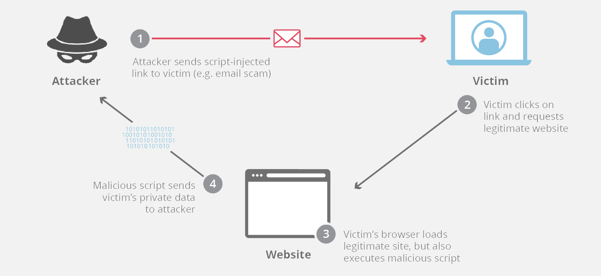

Internal Links
Material
- PaaS (Platform as a Service)
- https://www.youtube.com/watch?v=6L1eQe5E1K4&ab_channel=EyeonTech
- PaaS, short for Platform as a service, is a cloud computing model in which a third-party provider delivers hardware and software tools – usually those needed for application development – over the internet. A PaaS provider hosts the hardware and software on its own infrastructure, which frees developers from having to install in-house hardware or software.
- PaaS doesn't replace an entire business's IT infrastructure, but instead incorporates various underlying cloud infrastructure components that are operated and managed by the service provider. PaaS offerings can be used for mobile app and cross-platform app development, as well as DevOps tools.
- IaaS (Infrastructure as a Service)
- https://www.youtube.com/watch?v=rIlC8aUusmA&ab_channel=EyeonTech
- IaaS provides virtualized computing resources over the internet, like servers, storage, networking, hardware, and virtualization in a pay-as-you-go model.
- Cloud Computing Services Models - IaaS / PaaS / SaaS Explained
- https://www.youtube.com/watch?v=36zducUX16w&ab_channel=EcourseReview
- Serverless computing enables developers to build applications faster by eliminating the need for them to manage infrastructure. With serverless applications, the cloud service provider automatically provisions, scales, and manages the infrastructure required to run the code.
- In understanding the definition of serverless computing, it’s important to note that servers are still running the code. The serverless name comes from the fact that the tasks associated with infrastructure provisioning and management are invisible to the developer. This approach enables developers to increase their focus on the business logic and deliver more value to the core of the business. Serverless computing helps teams increase their productivity and bring products to market faster, and it allows organizations to better optimize resources and stay focused on innovation
- FWaaS (Firewall as a Service)
- Years ago, when companies kept all their applications and data in single, on-site data centers, they took a “castle and moat” approach to securing their networks, with on-premises firewalls serving as the main access checkpoints. However, as companies moved to the cloud, adopted infrastructure- and platform-as-a-service – IaaS and PaaS – strategies, added more company and employee-owned mobile devices to their networks, and began using more applications and data hosted on third-party infrastructure (i.e., software as a service, or SaaS), they quickly discovered they no longer had clearly defined network perimeters.
- They also found that:
- Because many of their applications and data were now being run and managed on third-party infrastructure, they no longer had any visibility into, or control over, their entire networks.
- Since companies and cloud providers share mutual responsibility for ensuring security in cloud environments, companies realized they couldn’t just depend on their cloud providers to oversee all their security. They’d have to find a way to do that themselves.
- This forced many companies to completely rethink their approach to security. It also prompted them to start taking advantage of FWaaS to deliver firewall and other network security capabilities as part of their cloud infrastructure.
- Today, thanks to this approach, companies can:
- Aggregate all traffic from multiple sources (e.g., on-site data centers, branch offices, mobile users, cloud infrastructure) into the cloud
- Consistently apply and enforce security policies across all locations and users
- Gain complete visibility into and control over their networks without having to deploy physical appliances
- Zero Trust - a security framework requiring all users, whether in or outside the organization’s network, to be authenticated, authorized, and continuously validated for security configuration and posture before being granted or keeping access to applications and data.
- Zero Trust assumes that there is no traditional network edge; networks can be local, in the cloud, or a combination or hybrid with resources anywhere as well as workers in any location.
- CASB (Cloud access security broker, pronounced “Kaz-BEE”) - a cloud-hosted software or on-premises software or hardware that act as an intermediary between users and cloud service providers.
- https://www.youtube.com/watch?v=9e4jdo5hHJk&ab_channel=Bitglass
- A CASB implements zero-trust access control and policy enforcement for these cloud environments. Traffic to the cloud flows through the CASB solution, enabling it to enforce corporate security policies.
- CASBs are designed to protect users from cloud-based threats, such as data breaches, data loss, and unauthorized access to cloud applications. They do this by inspecting all traffic to and from cloud applications, and blocking any traffic that is deemed to be a threat. CASBs can also be used to enforce security policies, such as requiring users to use strong passwords and preventing users from sharing sensitive data with unauthorized users.
- CASBs typically offer the following:
- Firewalls to identify malware and prevent it from entering the enterprise network
- Authentication to check users' credentials and ensure they only access appropriate company resources
- Web application firewalls (WAFs) to thwart malware designed to breach security at the application level, rather than at the network level
- Data loss prevention (DLP) to ensure that users cannot transmit sensitive information outside of the corporation
- Here are some prominent vendors in the CASB market:
- Microsoft Defender for Cloud Apps: Microsoft offers a CASB solution as part of their Microsoft 365 suite. It provides visibility, control, and threat protection for cloud services, including integration with Microsoft Azure and Office 365.
- Cisco Cloudlock: Cisco Cloudlock is a CASB solution that focuses on cloud security and data protection. It offers features such as data loss prevention, user behavior analytics, and compliance enforcement for popular cloud platforms.
- SWG (Secure Web Gateway)
- A cyber security product that protects company data and enforces security policies. SWGs operate in between company employees and the Internet. Like a water filter, which removes dangerous impurities from water so that it is safe to drink, SWGs filter unsafe content from web traffic to stop cyber threats and data breaches. They also block risky or unauthorized user behavior.
- A secure web gateway (SWG) blocks or filters out dangerous content and prevents data leakage. All employee Internet traffic passes through the SWG.
- SWGs are designed to protect users from web-based threats, such as malware, phishing, and data loss. They do this by inspecting all web traffic, including traffic to malicious websites, and blocking any traffic that is deemed to be a threat. SWGs can also be used to enforce security policies, such as blocking access to certain websites or preventing users from downloading certain files.
- All SWG products contain these technologies:
- Anti-malware detection and blocking
- Application control
- Why use a secure web gateway?In the past, business processes largely took place within an internal corporate network. But with an increased reliance on remote workforces and on cloud computing, organizations have to use the Internet in addition to or instead of their internal private networks. And the variety and numbers of threats present on the Internet, from phishing attacks to malware-infected webpages, have made SWGs essential for many organizations.
- How does a secure web gateway work?Some SWGs run on proxy servers. A proxy server represents another device on the Internet. It makes requests and receives responses on behalf of a client device (e.g. a user's laptop) or another server. For secure web gateways, this proxy server can either be an actual physical server or a virtual machine in the cloud.Other SWGs are software only; software-based gateways can run either on a company's premises or in the cloud as a SaaS application. And finally, some SWGs are deployed as on-premise appliances: physical hardware devices that plug into a company's IT infrastructure.No matter where they run or how they are deployed, all SWGs work in roughly the same way. When a client device sends a request to a website or application on the Internet, the request travels through the SWG first. The gateway inspects the request and passes it along only if it does not violate established security policies, just as security guards may inspect a person's possessions at a physical security checkpoint before allowing them through. A similar process occurs in reverse: all incoming data is inspected by the SWG before it is passed along to users.Because SWGs can run anywhere, they are especially helpful for managing remote employees. By requiring remote workers to access the Internet through a secure web gateway, companies that rely on a distributed workforce can better prevent data breaches, even if they do not have direct control over their employees' devices or networks.
- SWG vs. CASB
- In general, SWGs are a good choice for organizations that are concerned about web-based threats, while CASBs are a good choice for organizations that are concerned about cloud-based threats.
- SWG (Secure Web Gateway) and CASB (Cloud Access Security Broker) are two distinct but complementary security solutions. SWG focuses on securing web traffic and protecting users accessing the internet through web browsers, while CASB focuses on securing cloud services and data accessed by organizations. SWG provides features like URL filtering and malware protection, while CASB offers features like cloud application discovery and data loss prevention. Both solutions can be used together to provide comprehensive security coverage for web and cloud environments.
- In general, SWGs are a good choice for organizations that are concerned about web-based threats, while CASBs are a good choice for organizations that are concerned about cloud-based threats. However, there are a number of factors that you should consider when choosing between an SWG and a CASB, such as:
- The size and complexity of your organization
- The types of data that you store and process
- The types of cloud applications that you use
- Your budget
- EPP (Endpoint Protection Platform)
- An EPP is a set of software tools and technologies that enable the securing of endpoint devices. It is a unified security solution that combines antivirus, antispyware, intrusion detection/prevention, a personal firewall and other endpoint protection solutions.
- In most cases, EPP (Endpoint Protection Platform) solutions involve installing software or agents on the endpoints to provide security capabilities and protection. The installation of an EPP agent on the endpoint allows for real-time monitoring, threat detection, and prevention of malicious activities. By having a presence on the endpoint, the EPP solution can analyze and block potentially harmful processes, files, or network connections.
- An EP (Endpoint) refers to any computing device that serves as an entry point or interacts with a network. Here are some examples of endpoints:
- Desktop Computers: Traditional desktop computers used in office environments, such as Windows PCs or Apple Macs.
- Laptop Computers: Portable computing devices like laptops or notebooks that can be used both in office and remote environments.
- Mobile Devices: Smartphones and tablets running operating systems like iOS or Android.
- Servers: Physical or virtual servers that host applications, websites, or services.
- Internet of Things (IoT) Devices: Devices like smart TVs, smart speakers, wearables, or industrial sensors that connect to the internet.
- Point-of-Sale (POS) Systems: Devices used in retail environments for processing transactions and managing sales.
- Industrial Control Systems (ICS): Devices used in critical infrastructure sectors like energy, manufacturing, or transportation.
- Embedded Systems: Specialized devices with embedded computing capabilities, such as ATMs, medical devices, or digital signage.
- EPP vs. SWG?
- EPP focuses on securing endpoints, such as desktops, laptops, servers, and mobile devices, from various types of threats. It typically includes features like antivirus, anti-malware, host-based intrusion prevention, and behavior monitoring. EPP solutions aim to detect, prevent, and respond to threats targeting endpoints, protecting them from malware, ransomware, exploits, and other attacks.
- SWG focuses on securing web traffic and enforcing security policies for web browsing. It acts as a proxy between users and the internet, inspecting web traffic for threats, controlling access to websites based on policies, and filtering content to prevent malware infections, data leaks, and unauthorized access. SWG solutions typically include URL filtering, SSL/TLS decryption, content inspection, and web application controls.
- In summary, EPP primarily focuses on protecting endpoints from a wide range of threats, while SWG concentrates on securing web traffic and enforcing security policies for web browsing. These technologies can complement each other in an organization's overall security strategy, with EPP protecting endpoints from local threats and SWG securing web-based communication and content.
- SWGs vs. EPP vs. CASB:
Feature | SWG | EPP | CASB |
|---|---|---|---|
Purpose | Protects users from web-based threats | Protects endpoints from malware and other threats | Protects cloud usage from data loss, misuse, and unauthorized access |
Location | Installed on the network perimeter | Installed on endpoints | Installed in the cloud |
Traffic inspection | Inspects all web traffic | Inspects all traffic to and from endpoints | Inspects all traffic to and from cloud applications |
Security policy enforcement | Can be used to enforce security policies | Can be used to enforce security policies | Can be used to enforce security policies |
Cost | Typically less expensive than CASBs | Typically less expensive than CASBs | Typically more expensive than SWGs and EPPs |
Best use cases | Organizations that are concerned about web-based threats | Organizations that are concerned about endpoint security | Organizations that are concerned about cloud security |
- Zero Trust Network Access (ZTNA)
- Instead of a VPN, users connect to corporate resources through a client or a web browser. As requests are routed and accelerated through Cloudflare’s edge, they are evaluated against Zero Trust rules incorporating signals from your identity providers, devices, and other context.
- Where RDP software, SMB file viewers, and other thick client programs used to require a VPN for private network connectivity, organizations can now privately route any TCP and UDP traffic through Cloudflare’s network where that traffic is accelerated, verified, and filtered in a single pass for optimal performance and security.
- SASE (Secure access service edge) (pronounced “sassy”)
- SASE is the convergence of WAN (wide area networking), and network security services like CASB, FWaaS and Zero Trust, into a single, cloud-delivered service model
- SASE provides a more agile and flexible approach to security that can adapt to the ever-changing threat landscape.
- SASE includes a variety of security services, including:
- Secure web gateway (SWG): An SWG provides protection against web-based threats, such as malware, phishing, and data loss.
- Cloud access security broker (CASB): A CASB helps organizations to control and secure their cloud usage.
- Zero trust network access (ZTNA): ZTNA provides secure access to applications and data, regardless of the user's location or device.
- Firewall as a service (FWaaS): FWaaS provides a cloud-based firewall that can be used to protect networks from a variety of threats.
- Data loss prevention (DLP): DLP helps organizations to protect sensitive data from being leaked or stolen.
- SASE can be delivered as a single, integrated solution or as a collection of individual services. The best approach for an organization will depend on its specific needs and requirements.
- SIEM (Security incident and event management) (pronounced "sim" with a silent 'e')
- Security information and event management (SIEM) is a field within the field of computer security, where software products and services combine security information management (SIM) and security event management (SEM). They provide real-time analysis of security alerts generated by applications and network hardware. Vendors sell SIEM as software, as appliances, or as managed services; these products are also used to log security data and generate reports for compliance purposes. The term and the initialism SIEM was coined by Mark Nicolett and Amrit Williams of Gartner in 2005.
- Security incident and event management (SIEM) is the process of identifying, monitoring, recording and analyzing security events or incidents within a real-time IT environment. It provides a comprehensive and centralized view of the security scenario of an IT infrastructure.
- There are, generally speaking, six main attributes of a SIEM system:
- Retention: Storing data for long periods so that decisions can be made off of more complete data sets.
- Dashboards: Used to analyze (and visualize) data in an attempt to recognize patterns or target activity or data that does not fit into a normal pattern.
- Correlation: Sorts data into packets that are meaningful, similar and share common traits. The goal is to turn data into useful information.
- Alerting: When data is gathered or identified that trigger certain responses - such as alerts or potential security problems - SIEM tools can activate certain protocols to alert users, like notifications sent to the dashboard, an automated email or text message.
- Data Aggregation: Data can be gathered from any number of sites once SIEM is introduced, including servers, networks, databases, software and email systems. The aggregator also serves as a consolidating resource before data is sent to be correlated or retained.
- Compliance: Protocols in a SIEM can be established that automatically collect data necessary for compliance with company, organizational or government policies.
- Web Application Firewall (WAF)
- A WAF or web application firewall helps protect web applications by filtering and monitoring HTTP traffic between a web application and the Internet. It typically protects web applications from attacks such as cross-site forgery, cross-site-scripting (XSS), file inclusion, and SQL injection, among others. A WAF is a protocol layer 7 defense (in the OSI model), and is not designed to defend against all types of attacks. This method of attack mitigation is usually part of a suite of tools which together create a holistic defense against a range of attack vectors.
- Cloudflare DLP (data leak prevention)
- Cloudflare DLP inspects HTTP/S traffic and files like Microsoft Office documents for the presence of sensitive data such as credit card information and social security numbers. After identifying the data you would like to protect, you can easily configure DLP profiles with allow or block policies to prevent information from leaving your corporate tenants.
- Data loss prevention (DLP) -- sometimes referred to as data leak prevention, information loss prevention and extrusion prevention -- is a strategy to mitigate threats to critical data. DLP is commonly implemented as part of an organization's plan for overall data security.
- Using a variety of software tools and data privacy practices, DLP aims to prevent unauthorized access to sensitive information. It does this by classifying the different content types within a data object and applying automated protection policies.
- A multilayered DLP strategy ensures sensitive information remains behind a network firewall. Creating a DLP plan also enables an organization to review and update its data storage and retention policies to maintain regulatory compliance.
- FIDO2
- The FIDO2 Project is a joint effort between the FIDO Alliance and the World Wide Web Consortium whose goal is to create strong authentication for the web. At its core, FIDO2 consists of the W3C Web Authentication standard and the FIDO Client to Authenticator Protocol 2
- FIDO2 enables users to leverage common devices to easily authenticate to online services in both mobile and desktop environments.
- The FIDO2 specifications are the World Wide Web Consortium’s (W3C) Web Authentication (WebAuthn) specification and FIDO Alliance’s corresponding Client-to-Authenticator Protocol (CTAP).
- https://www.youtube.com/watch?v=DWrLBwi7ZBA&ab_channel=DevOpsDaysSeattle
- https://www.youtube.com/watch?v=F_E2LZK-bFk&ab_channel=LawrenceSystems
- https://www.youtube.com/watch?v=ybn9J4QCqK4&ab_channel=CrosstalkSolutions
- https://www.youtube.com/watch?v=fzUVrz0ixn8&ab_channel=AllThingsSecured
- Privacy Access Tokens (PATs)
- Allows users to verify their identity without displaying a CAPTCHA
- PATs are designed to be more privacy-respecting and less intrusive. They work by using cryptography to generate a token that is unique to each user. This token is then used to authenticate the user without the need for any user interaction.
- Here are some of the benefits of using PATs:
- PATs are a completely invisible, private way to validate that real users are visiting a website, and visitors using operating systems that support these tokens can prove they’re human without completing a CAPTCHA
- PATs help identify HTTP requests from legitimate devices and people without compromising their identity or personal information
- They eliminate the need for human interactions, making the user experience smoother and faster
- PATs also vastly improve privacy by validating without fingerprinting, and they don’t require or leak non-essential data
- OWASP (Open Web Application Security Project) rules
- https://www.youtube.com/watch?v=GJADjlBbv3Y&ab_channel=OWASPFoundation
- a set of security guidelines and best practices aimed at preventing common web application vulnerabilities and ensuring the security of web applications.
- OWASP is an online community that produces freely-available articles, methodologies, documentation, tools, and technologies in the field of web application security.
- Attack surface management (ASM)
- Attack surface management is an approach to cyber defense that assesses and monitors external and internal assets for vulnerabilities as well as any risk that can potentially impact an organization.
- JavaScript code that runs on a user’s machine. In terms of websites, client-side code is typically code that is executed by the web browser after the browser loads a web page. This is in contrast to server-side code, which is executed on the host’s web server. Client-side code is very useful with interactive webpages; interactive content runs faster and more reliably since the user’s computer doesn’t have to communicate with the web server every time there is an interaction. Browser-based games are one popular platform for client-side code, since the client-side code can ensure the game runs smoothly regardless of connectivity issues.
- Code that runs client side is very popular in modern web development and is utilized on most modern websites. Since cross-site code is a staple of the modern web, cross-site scripting has become one of the most frequently reported cyber-security vulnerabilities, and cross-site scripting attacks have hit major sites such as YouTube, Facebook, and Twitter.
- Javascript injection
- https://www.youtube.com/watch?v=Pavl4MYFfSw&ab_channel=rudolfson.junior
- JavaScript injection is a type of attack in which an attacker injects malicious JavaScript code into a website. This code can then be executed by the victim's browser, allowing the attacker to steal sensitive information, hijack sessions, or take other malicious actions.
- There are a number of ways that an attacker can inject malicious JavaScript code into a website. One common method is to exploit vulnerabilities in the website's code. Another method is to trick the victim into clicking on a malicious link, which will then download and execute the malicious code.
- Once the malicious JavaScript code is executed, it can do a variety of things. It can steal sensitive information, such as credit card numbers or passwords. It can hijack sessions, which allows the attacker to take control of the victim's account. It can also take other malicious actions, such as defacing the website or sending spam.
- There are a number of things that can be done to prevent JavaScript injection attacks. One important step is to use a web application firewall (WAF). A WAF can help to block common attack vectors, such as malicious JavaScript code. Another important step is to keep the website's code up to date. Software updates often include security patches that can help to protect the website from attack.
- A DNS amplification is like if someone were to call a restaurant and say “I’ll have one of everything, please call me back and repeat my whole order,” where the callback number actually belongs to the victim. With very little effort, a long response is generated and sent to the victim.
- By making a request to an open DNS server with a spoofed IP address (the IP address of the victim), the target IP address then receives a response from the server.
- JavaScript Challenge
- JavaScript Challenge is a method that is used in DDoS mitigation to filter out requests that are characteristic of a botnet or other malicious computer. The challenge consists of sending a JavaScript code that includes a challenge. Legitimate browsers have a JavaScript stack and will understand and pass the challenge transparently. DDoS bots typically are not equipped with JavaScript stack and therefore cannot pass the challenge.
- In the context of security, a JavaScript challenge refers to a technique used to differentiate between human users and automated bots or malicious scripts. It is commonly employed as a part of bot detection and mitigation strategies.
- A JavaScript challenge typically involves the insertion of a piece of JavaScript code on a web page, which is executed by the client's browser. The JavaScript code presents a task or puzzle that requires the browser to perform certain calculations or interact with the page in a specific way. Since most bots and automated scripts do not have the capability to execute JavaScript or interact with web elements like a human user, they are unable to successfully complete the challenge.
- By implementing a JavaScript challenge, website operators can effectively filter out suspicious or malicious traffic. Legitimate users, on the other hand, are usually able to complete the JavaScript challenge seamlessly, as their browsers support JavaScript execution.
- Acquisition of goods or services using the application in a manner that a normal user would be unable to undertake manually.
- snapping up inventory, to sell it at inflated prices on third-party sites
- Headless XXX
- Headless: In general, "headless" refers to a software or system that operates without a graphical user interface (GUI). It typically focuses on providing backend functionality or services without the need for a traditional visual interface.
- Common types of headless implementations include:
- Headless CMS: A headless content management system that separates content creation and management from the presentation layer, allowing content to be delivered through APIs for use in various front-end applications.
- A CMS, or content management system, is a software application that helps users create, manage, and modify content on a website without the need for technical knowledge. In other words, a CMS lets you build a website without needing to write code from scratch (or even know how to code at all).
- Headless eCommerce: Headless eCommerce platforms decouple the front-end shopping experience from the back-end commerce functionality, enabling flexible front-end development and integration with multiple channels.
- Headless API: A headless API provides access to the core functionalities of a system or service without any user interface components, allowing other applications to interact with and consume the underlying functionality.
- Headless Browser: Headless browsers operate without a graphical user interface, allowing automated web browsing, web scraping, testing, and other web-related tasks through programmatically controlled interactions with web pages.
- Credential stuffing (attack)
- when stolen login credentials from one service are used to attempt to break into accounts on another service
- Credit card stuffing (aka carding)
- when bots are used to try to checkout with stolen credit card details
- Inventory hoarding (denial of inventory)
- taking ecommerce items out of circulation by adding many of them to a cart/basket; the attacker never actually proceeds to checkout to buy them but contributes to a possible stock-out condition
- Cross-Site Request Forgery (CSRF)
- a type of confused deputy* cyber attack that tricks a user into accidentally using their credentials to invoke a state changing activity, such as transferring funds from their account, changing their email address and password, or some other undesired action.
- Here is an example of the 4 steps in a cross-site request forgery attack:
- An attacker creates a forged request that, when run, will transfer $10,000 from a particular bank into the attacker’s account.
- The attacker embeds the forged request into a hyperlink and sends it out in bulk emails and also embeds it into websites.
- A victim clicks on an email or website link placed by the attacker, resulting in the victim making a request to the bank to transfer $10,000.
- The bank server receives the request, and because the victim is properly authorized, it treats the request as legitimate and transfers the funds.
- Local file inclusion (also known as LFI)
- Local File Inclusion (LFI) refers to a security vulnerability that allows an attacker to include and execute files on a target system, potentially leading to unauthorized access or information disclosure.
- an example of a Local File Inclusion (LFI) attack:
- A website has a page that allows users to upload images. The page includes the following code:
- <?php
- $image = $_GET['image'];
- include('images/' . $image);
- ?>
- An attacker can exploit this vulnerability by uploading a malicious PHP script called
evil.php. When the user visits the page, the malicious script will be included and executed. The attacker can then use the script to steal sensitive information from the server, such as passwords or credit card numbers. - Structured Query Language (SQL,a programming language used to maintain most databases.) Injection is a code injection technique used to modify or retrieve data from SQL databases. By inserting specialized SQL statements into an entry field, an attacker is able to execute commands that allow for the retrieval of data from the database, the destruction of sensitive data, or other manipulative behaviors.
- With the proper SQL command execution, the unauthorized user is able to spoof the identity of a more privileged user, make themselves or others database administrators, tamper with existing data, modify transactions and balances, and retrieve and/or destroy all server data.
- In modern computing, SQL injection typically occurs over the Internet by sending malicious SQL queries to an API endpoint provided by a website or service (more on this later). In its most severe form, SQL injection can allow an attacker to gain root access to a machine, giving them complete control.
- Imagine a courtroom in which a man named Bob is on trial, and is about to appear before a judge. When filling out paperwork before the trial, Bob writes his name as “Bob is free to go”. When the judge reaches his case and reads aloud “Now calling Bob is free to go”, the bailiff lets Bob go because the judge said so.
- While there are slightly different varieties of SQLi, the core vulnerability is essentially the same: a SQL query field that is supposed to be reserved for a particular type of data, such as a number is instead passed unexpected information, such as a command. The command, when run, escapes beyond the intended confines, allowing for potentially nefarious behavior. A query field is commonly populated from data entered into a form on a webpage.
- https://www.youtube.com/watch?v=wcaiKgQU6VE&ab_channel=Hacksplaining
- Magecart attack (aka web skimming, digital skimming, or formjacking)
- The name “Magecart” refers to several hacker groups that employ online skimming techniques for the purpose of stealing personal data from websites—most commonly, customer details and credit card information on websites that accept online payments. Magecart groups have successfully breached well-known brands. The name is inspired by the original target of these groups—the Magento platform, which provides checkout and shopping cart functionality for retailer sites.
- How Do Magecart Attacks Work?Each Magecart group may operate in a different manner. Previous attacks used different patterns, including:
- Targeting primarily a small number of high-value organizations.
- Mass attacks built especially to attack as many vendors as possible.
- Using several different types of code injects and skimmers, alongside other intrusion methods and a host of additional tactics and tools.
- Carrying out supply chain attacks that target third-party vendors that can provide access to several web applications.
- Targeting eCommerce platforms.
- Cross-site scripting (XSS) is an exploit where the attacker attaches code onto a legitimate website that will execute when the victim loads the website. That malicious code can be inserted in several ways. Most popularly, it is either added to the end of a url or posted directly onto a page that displays user-generated content. In more technical terms, cross-site scripting is a client-side code injection attack.

- One useful example of cross-site scripting attacks is commonly seen on websites that have unvalidated comment forums. In this case, an attacker will post a comment consisting of executable code wrapped in ‘<script></script>’ tags. These tags tell a web browser to interpret everything between the tags as JavaScript code. Once that comment is on the page, when any other user loads that website, the malicious code between the script tags will be executed by their web browser, and they will become a victim of the attack.
Knowledge-Check Q&A
Name common compliance frameworks
ISO 27001
A framework that defines how an organization should manage and protect information securely through policies and controls.
SOC 2
A standard that evaluates whether a company properly protects customer data based on security and availability principles.
PCI-DSS
A mandatory security standard for companies that store, process, or transmit credit card information.
HIPAA
A U.S. regulation that protects sensitive healthcare and medical information.
Follow-up: What does compliance mean from a DevOps perspective?
From a DevOps perspective, compliance means enforcing security technically, not just documenting it: implement least-privilege IAM, ensure all infrastructure changes go through auditable CI/CD pipelines, enforce encryption at rest and in transit, centralize logs with proper retention, store secrets in a secure manager, run regular vulnerability scans, test backups and disaster recovery, separate environments clearly, and maintain strict role-based access controls. For PCI and HIPAA in particular, you also need strong network segmentation, tighter access restrictions, detailed audit trails, and proper handling or masking of sensitive data.